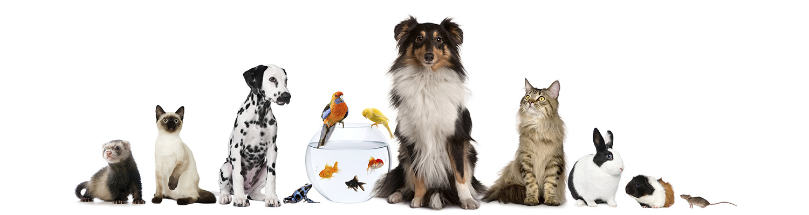

Welcome to the Wisdom-Pets
About Us
Wisdom Pet Medicine strives to blend the best in traditional and alternative medicine in the diagnosis and treatment of health conditions in companion animals, including dogs, cats, birds, reptiles, rodents, and fish. We apply the latest healthcare technology, along with the wisdom garnered in the centuries old tradition of veterinary medicine, to find the safest and most effective treatments and cure.
Pet Care Services
At Wisdom-Pets, we serve pets of every type, age, and phase of life because we truly love animals. We show it with every belly rub, long walk, scratch behind the ear, and treat we give. We’d love to be your trusted sidekick for a healthy and happy pet because we know we can deliver trusted, quality care and a professional, stress-free experience for you.
Contact Us
Feel Free to reach out to us by following social-media handles in case you have and questions for us or just wanna say Hello!